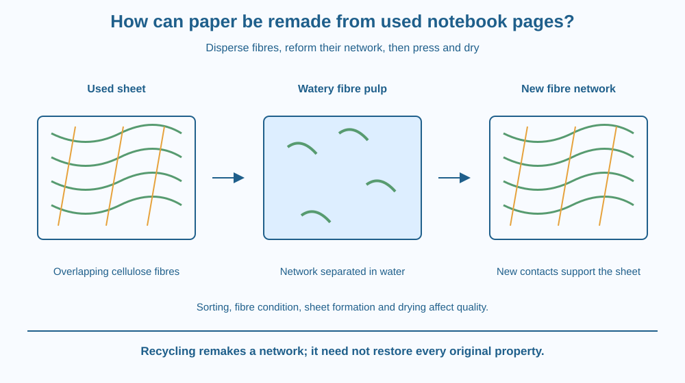

Explain how used paper can be dispersed into fibres and formed into another sheet. Distinguish pulping, sheet formation and drying. Recognise why recycled paper quality depends on fibres, contamination and processing rather than assuming every sheet can be remade indefinitely without change.
A used notebook page seems like one continuous flat object. Soaking and gently breaking it apart reveals that it is built from many fibres. Those fibres can sometimes be collected and arranged into a new sheet.
What holds the new sheet together after water is removed? The explanation lies in the contacting fibre network and interactions between its surfaces, not in secretly adding an entire solid page to the mixture.
Recycling changes an existing material's arrangement and condition. It does not necessarily return it to exactly the state it had before its first manufacture.
Ordinary paper commonly contains cellulose fibres derived from plant material, together with possible fillers, coatings and additives. The visible sheet is a network whose fibres overlap and contact one another in many places.
Pulping disperses suitable paper into a watery fibre mixture. Wetting and mechanical action help separate the network. Industrial processes use equipment and controls that a hand-torn classroom model does not reproduce completely.
Contaminants can complicate recycling. Plastic coatings, adhesives, food residues and different inks do not all behave like cellulose fibres. Sorting matters because the incoming mixture influences both processing and the resulting sheet.
During sheet formation, a dilute fibre suspension is spread over a supporting screen or similar surface. Water drains through while fibres remain and overlap. The screen supports formation, but simply filtering water does not by itself explain the final sheet's strength.
Pressing and drying bring fibre surfaces into closer contact. Interactions, including hydrogen bonding between suitable cellulose surfaces, help hold the network together. Fibre interlocking and the structure of the sheet also contribute to its properties.
This is not the same as tying a knot at every fibre crossing. Surface contact and drying conditions matter. A thick uneven pile can dry into a lumpy weak object rather than a uniform useful sheet.
Fibres can be shortened or otherwise changed during processing and repeated use. Recycling therefore does not preserve every original property indefinitely. Manufacturers may blend fibre sources and adjust processes to achieve a particular product quality.
The final paper also contains water at its normal equilibrium with the surroundings; drying does not mean removing every water molecule forever. The useful distinction is a workable sheet network compared with a dilute pulp suspension, not an absolute transition from all water to no water.
Draw a mat of overlapping long fibres, then a second drawing with those fibres spread through water. Finally collect them into a new mat with many contacts.
Keep the individual fibres visible in all stages. This helps explain how the material can remain while its network arrangement changes. Then shorten some fibres in a repeated-processing drawing to show one reason performance might change.
Add a contaminant symbol that is not a fibre. Decide where sorting or removal would be useful. The model should distinguish dispersing the network from magically converting every incoming object into new cellulose.
The SVG shows a used sheet, dispersed fibres in water and a newly formed overlapping network. A screen is shown beneath the wet mat during sheet formation, followed by pressing and drying arrows.
The final magnified contact region identifies fibre-surface interactions rather than a glue blob at every crossing. Labels distinguish the three process stages. The drawing is not a complete industrial recycling line.
A comparison includes shortened fibres and a non-paper contaminant. It supports an honest limitation: recovered material can be useful even when its properties differ from those of the original notebook page.

Paper collection and recycling in India depend on sorting as well as recovering mass. A clean uncoated sheet and a food-contaminated composite package can require different handling. Calling both paper does not make their recycling routes identical.
School art projects may create handmade paper with a rougher texture than factory paper. That difference reflects fibre dispersion, sheet thickness, pressing and drying, not necessarily a failed demonstration.
Using less paper and reusing sheets where suitable can complement recycling. This lesson focuses on remaking the fibre network, while a later waste-audit lesson will examine material reduction across a broader system.
Use a small piece of clean uncoated scrap paper, room-temperature water, a bowl and a spoon. Do this with an adult. Do not use a blender, sharp tools, printed receipts or unknown coated materials.
The five minutes are a setup and model, not a promise of a finished dry sheet. Do not pour paper pulp down a drain. Collect and dispose of the small experimental material appropriately with adult help.
Why might a pulp containing many very short fibres form a different network from one containing longer fibres? Consider the number and arrangement of contacts rather than assuming more pieces always means greater strength.
Now imagine a plastic coating mixed into the pulp. Explain why the coating does not automatically become useful cellulose fibre. Recycling is a controlled material process, not a rule that everything in a collection bin transforms into the same product.
What is pulping in this recycling model?
Answer: B — Pulping separates the network into a suspension suitable for later sheet formation.
Why do pressing and drying matter?
Answer: A — Closer fibre contacts and surface interactions help develop the sheet structure.
Plastic-coated material enters a paper pulp. What is the soundest prediction?
Answer: C — Different materials do not necessarily disperse or bond like cellulose fibres.
Create a three-stage paper-recycling guide with a separate sorting step. At each stage, identify where the fibres are, what water is doing and what structural change occurs.
Include a limitation about repeated processing or contamination. The guide should explain a new fibre network without claiming that handmade recycled paper must have the same smoothness and strength as a factory notebook page. Do not require powered equipment or a sharp homemade screen frame.
A sheet can behave like one object even though its strength comes from a large network of fibre contacts. Dispersing and remaking that network exposes the difference between the material pieces and the structure they form together. The same fibres can produce different sheet properties when arranged differently.
Paper recycling disperses suitable fibres, reforms an overlapping mat and dries its contacts into a sheet; fibre condition and contaminants affect the result.